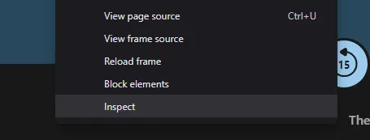
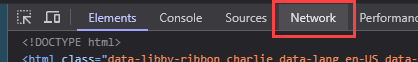
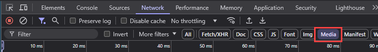
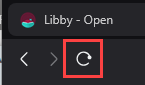
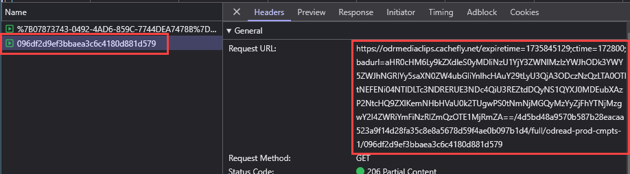
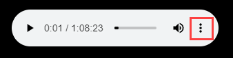
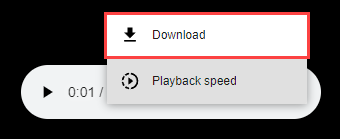

Libby MP3s
Requirements:
- Chrome or a Chromium-based browser
This method requires no additional setup (nothing to download or run), though is a bit more cumbersome for longer audiobooks.
- Open the Audiobook player in the Libby app (https://libbyapp.com/)
-
Right click, and click on Inspect

-
Click on Network

-
Click on Media

-
Refresh the page

-
Select the last media file and copy the Request URL:

-
Paste the URL in a new tab. This will open the mp3, which can then be downloaded.


If an audiobook has multiple parts (typically if it is longer than ~1.25 hours), then there are a few more steps to get the additional parts (see below). Or try the Overdrive method.
Also, a variation of this retrieval method can be used, but instead of inspecting the page yourself, you can use the Video Download Helper to acquire the mp3 (see the Video Download Helper guide for more information). Please note if you use this method you cannot use Chrome.
Additional Steps for Multi-Part Books (on Libby)
-
After downloading the first part, navigate to the each subsequent part of the book.
-
Repeat steps 5-7 above for each subsequent part.
Tips to make this easier:
- Reference the last file downloaded for duration and use the Libby audioplayer Table of Contents to figure out where you need to jump for the next part.
- Start playing the file prior to downloading to make sure it is the correct part.